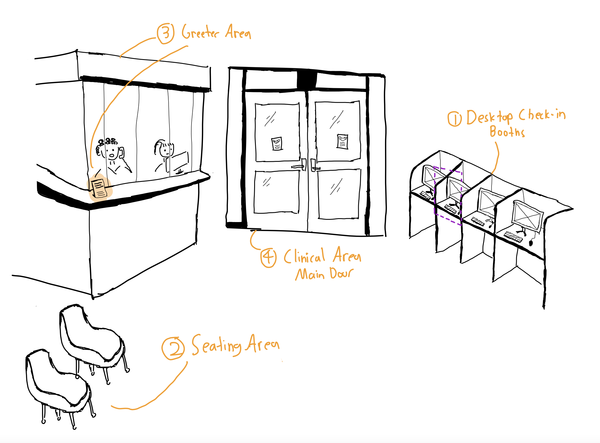
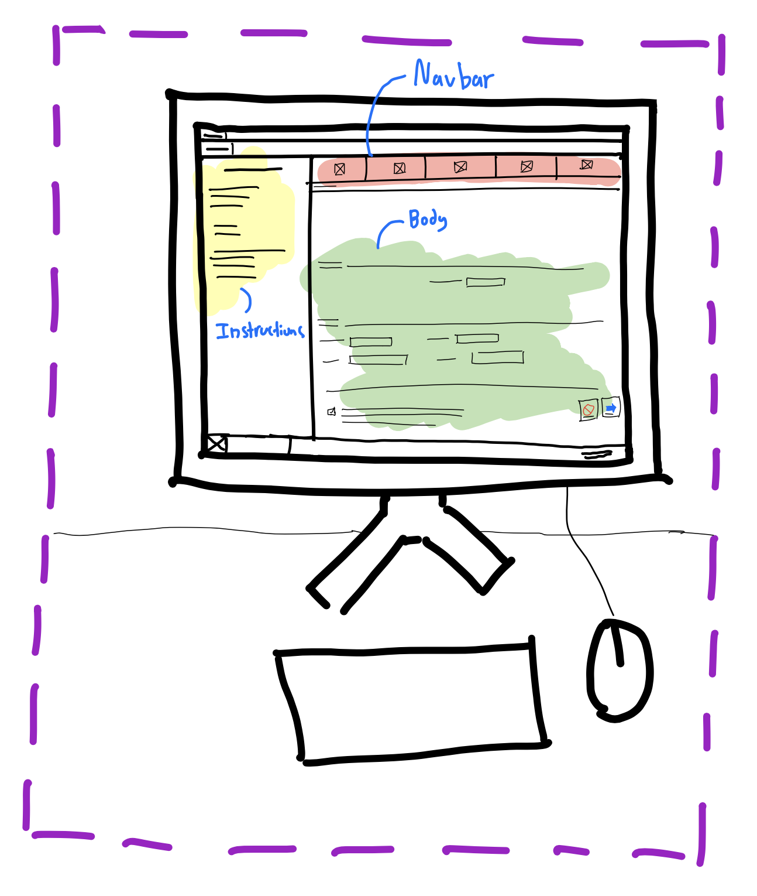

Jump to: Background • Overview • Desktop UI • Observations • Personas • Storyboard • Reflection
My goal for this study was to better understand the experiences of users checking in for scheduled clinical appointments at Brown University's new Health Services clinic.
The new check in station my study centers on was launched in September of 2021 as part of a new, integrated Health and Wellness center, combining the previously separated Health Services alongside Counseling and Psychological Services into one centralized point of care in the middle of Brown University's campus.
As someone interested in and personally invested towards the accessibility of healthcare on campus, I wanted to evaluate the experiences of patients to understand and communicate the condition of this facet of Brown's campus healthcare system.
The check-in station consisted of four distinct, interactable sections:

Desktop Check-in Booth where users validate their identity and update health information.
Seating Area for users to sit and wait for their names to be called after using the booth.
Greeter Area where staff members answer miscellaneous inquiries.
A printed page instructs users to “Please sign in with the computers across from staff.”
Clinical Area Main Door where nurses primarily call checked-in users inside to meet providers, and escort users out afterwards. Two other secondary doors are also used to the left and behind the sketched area.
The Desktop interface is itself comprised of three main components:

Navbar indicates which of the 5 pages a user is on.
Instructions contains paragraphs on how the displayed page should be used.
Body holds the fields, options, and checkboxes for each page.
A “Cancel” and “Next” button pair resets the program and submits the displayed form respectively.
Over two weekdays, I waited in the public seating area and observed 12 users from morning to afternoon.
I avoided observing up close how users filled out forms on the desktop check-in to respect their privacy.
Instead, I focused on observing how each user navigated the station, including how long they lingered on each section, and their interactions with staff.
Key Observations
Of those I observed, I interviewed Users A, B and H after they left the clinical area. I selected my interviewees based on how distinct their observed behaviors were to capture a more exhaustive range of patterns across diverse groups.
While I followed my eight questions, I also followed up on related topics that my interviewees expressed interest in discussing, while casually conversing afterwards and answering questions they had about my project.
Interview Questions
I then summarized the responses in the following patterns:
Summary of Responses
Stemming from my research, I crafted two user personas, Scattered Sakshi and Hesitant Harry, who represented two discrete clusters of user behavior patterns I noticed.
Sakshi is a med student, juggling her time between managing a research lab project, volunteering at RI hospital, and studying full time. Sakshi schedules biweekly visits to health services to manage an ongoing health condiiton between lab and class, without much time to spare.
Why Sakshi?
Sakshi is based on observations of Users A, I, K, alongside findings from my conversation with User A, who all arrived late. Sakshi represents those who possess more familiarity with the check-in process and struggle to fit their appointments within their busy schedules.
Harry is a sophomore in his first in-person year at Brown, navigating dorm-life and living alone for their first time, and is a combination of Users B and H. Today is Harry’s first visit to Health Services to get a vaccination shot.
Why Harry?
Harry is based off my observations of numerous users and conversations with Users B and H who required more staff guidance to successfully check in. Harry represents newer users less familiar to checking in, who feel pressured to avoid any mistakes.
I then created the following storyboard to communicate the user journey of Scattered Sakshi. I decided to map Sakshi's journey. One reason behind why I chose Sakshi was that I felt Sakshi's user journey could highlight instances where the existing check-in process could leave users disappointed, especially within the context of their broader life.
Sakshi spends the day cycling through lectures, volunteer work, and finally her lab.
Sakshi is working at her lab, expecting to finish when the lab runs into an unexpected problem. Her Professor asks her stay and help out: “Just another 15 minutes!”
30 minutes later, Sakshi sprints out of lab, barely catching the bus to 450 Brook St.
She arrives at the building, slamming open the door and sprinting up the stairs, as the user before her leaves their booth while coughing right into the keyboard.
After heading straight towards the nearest available counter, Sakshi, while grossed out, furiously clicks and types through the program just as she's done a thousand times.
Through each section, Sakshi ignores the paragraphs of dense instructions and text; using her experience to speed through the clunky program ASAP to not miss her appointment.
Unfortunately after the program says she is too late, she goes to the Greeter Area and makes her case: "I'm sorry I'm late - I came here as fast as I could!"
They spend the next ten minutes trying to reschedule. They go back and forth: “2:00PM? No I cant do then, could 2:00pm Wednesday work?" "...What about Thursday?...Friday? [and so on]...”
After scheduling another appointment tightly packed between her commitments, Sakshi walks away disappointed, back again where she first started.
All in all, I really enjoyed being able to conduct this research project. Despite being a frequent user of the check in station myself, I was surprised at how my findings of what different people wanted and got out from their experience checking in could differ so much from my own expectations. It was also a great experience to apply web design principles I knew from theory to use HTML and CSS to create a responsive webpage to showcase my research process. As I learn more, I hope to sometime redesign the way users access clinical care at 450 Brook St. based on my findings.
If you are taking a look at this page for CSCI 1300, I would love to hear about any and all suggestions you might have regarding my process.
Thank you for taking a look at my work!
I'd like to also mention the following sources which helped in the creation of this project:
coolors.co/image-picker, in choosing the color palette of the page.
w3docs.com/snippets/css/how-to-create-a-drop-shadow-for-png-image.html, in adding drop shadow through CSS.
css-tricks.com/snippets/css/a-guide-to-flexbox/, in guiding page formatting.
Resources from CSCI 1300 lectures and handouts which have helped immensely
JH, who gave me a crash course in drawing better cartoon characters beyond stickmen.